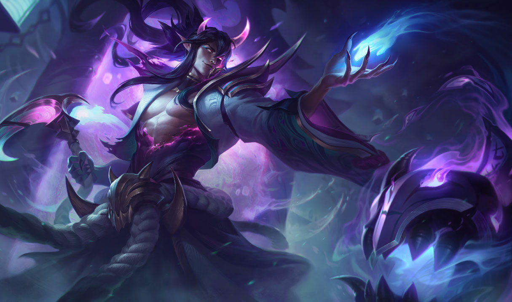
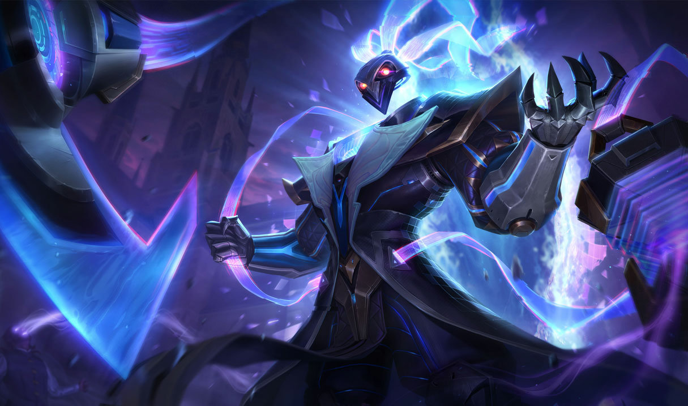
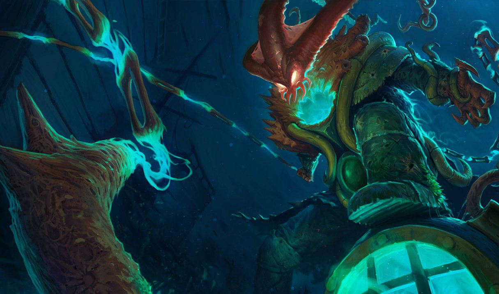

Thresh, a láncok őre

Valaha a ma Thresh néven ismert borzasztó élőholt kísértet is csak egy egyszerű, bár zaklatott ember volt. Egy rég elfeledett korban egy olyan rend szerény őrzője volt, amely a misztikus tudás gyűjtését és megőrzését tűzte ki céljául. A rendet az Áldott-szigeteken alapították, amelyet varázslatos fehér köd rejtett el a világ elől. A rend vezetői szolgálattal töltött hosszú éveinek elismeréséül megbízták Thresht a Helia városa alatti rejtélyes kincstárak őrzésével. Veszélyes ereklyék hatalmas, titkos gyűjteményét tárolták itt hét lakat alatt. Thresh erős akaratú és módszeres volt, ami tökéletesen alkalmassá tette őt a feladatra... társai figyelmét azonban így sem kerülte el a kegyetlenségre való hajlama. Noha ez a hajlam gyilkos tettekben még nem nyilvánult meg – legalábbis bizonyítani nem tudták–, sokan inkább messziről elkerülték. Egyértelmű volt, hogy olyan munkát kapott, ami távol tartja őt másoktól, ezzel megelőzve, hogy megszerezze az elismerést, ami szerinte járt neki. A sötétségben eltöltött magányos évek megtették a hatásukat, és Thresh egyre keserűbbé és irigyebbé vált, ahogy lámpásával a hosszú termekben járőrözött, ahol saját neheztelő gondolatai jelentették az egyetlen társaságot. Amikor egy őrült király seregeinek sikerült átszakítania az oltalmat nyújtó ködöt és hívatlanul partra szálltak az Áldott-szigeteken, elérkezett az ő pillanata. Thresh titokban örömét lelte az ezt követő mészárlásban. A szigeteket lerohanó király rögeszmésen vágyott halott királynőjének feltámasztására, Thresh pedig szándékosan elvezette őt a legendás élet vizéhez. Kizárólag a rend legidősebb vezetői léphettek be az élet vizének otthont adó rejtett katakombákba. A király legnagyszerűbb harcosaival az oldalán azonban Thresh nevetve nézte, ahogy a szent hely őrzőit a szeme láttára kaszabolják le. Úgy gondolta, most végre megkaphatja, ami jár neki. Azt, hogy valójában mi történt, miután a király a vízbe helyezte az élettelen testet, csak a jelenlevők tudnák elmesélni, de a következmények egész Runaterrát megrázták. A sötét energiák katasztrofális lökéshullámmal robbantak ki, amely bekebelezte Heliát, és rövidesen a teljes Áldott-szigetekre kiterjedt, a valaha védelmet nyújtó fehér köd pedig fekete, gyilkos erőként gomolygott tovább. Elpusztított minden útjába kerülő élőlényt, ám a lelkük képtelen volt továbblépni, az élet és halál közötti borzalmas új létsíkon ragadt. Thresht az elsők között ragadta magával a sötétség... de míg mások üvöltöttek kínjukban, Thresh élvezettel figyelte a pusztítást. A kataklizma, a Romlás után kísérteties szörnyetegként tért vissza, akit felvillanyozott, hogy a megtorlás félelme nélkül kínozhat másokat, megszabadulva a halandóság korlátaitól. Az elkövetkező évtizedekben és évszázadokban természetfeletti megjelenése lépésről lépésre hozzáidomult a gonoszsághoz és kegyetlenséghez, amely mindig is a szívében lakozott. Thresh örömmel fedezte fel, hogy a Fekete Ködben ragadt legtöbb lélek korábbi énjének csak töredékét őrizte meg – még a legerősebb idegen megszállók is, mint Hecarim vagy Ledros –, az ő hatalma azonban egyre csak nőtt. Gyűlölete arra készteti, hogy alsóbbrendű lelkekre vadásszon, így kedvenc áldozatai mindig azok, akik a leginkább rettegnek tőle. Mindegy milyen erős az elszántságuk, kitartásuk vagy a hitük, Thresh arra törekszik, hogy a lehető leglassabban törje meg őket a félelmeik és gyengeségeik kiismerésével, miközben a végsőkig játszadozik velük. Thresh csak akkor húzza őket halhatatlan markába horgokban végződő láncaival, ha az életük már romokban hever, elvesztették a szeretteiket, a céljaikat, és az utolsó reménysugár is kihunyt számukra. Azonban még a halál sem jelent kegyelmet, hiszen minden áldozatának kitépi a lelkét, és elátkozott lámpásába börtönözi őket, hogy örök időkre pusztításának akaratlan szemtanúi legyenek. Mindössze egyetlen lélek szabadult meg tőle. Senna, a Thresh által megvetett Fény Őrzőinek egyike, értelmetlen halált halt, miután szembekerült Threshsel egy elfeledett, rémséges kincseskamrában. Kétségbeesett férje, Lucian, ezután évekig üldözte a kegyetlen lidércet, egészen a vadászat megszállottjává vált, miközben a gyász és a düh szinte teljesen felemésztette. Thresh mindezt igazán élvezte. Azonban mielőtt megszerezhette volna Lucian lelkét, egy bosszúszomjas csapás felhasította Thresh lámpását, és Senna lelke kiszabadulhatott. Mivel halandó kötelékük nyilvánvaló ereje kíváncsivá tette, Thresh úgy döntött, megadja nekik ezt az apró és jelentéktelen győzelmet, hiszen jól tudta, hogy a fények és árnyak csatájának, amelyet vívnak, még messze nincs vége…
További kinézetei:
  Animáció(k) amikben szerepel:
Runaterra meséi: Az Árny-szigetek | „Nincs menekvés”Senna: az árnyak ölelése”